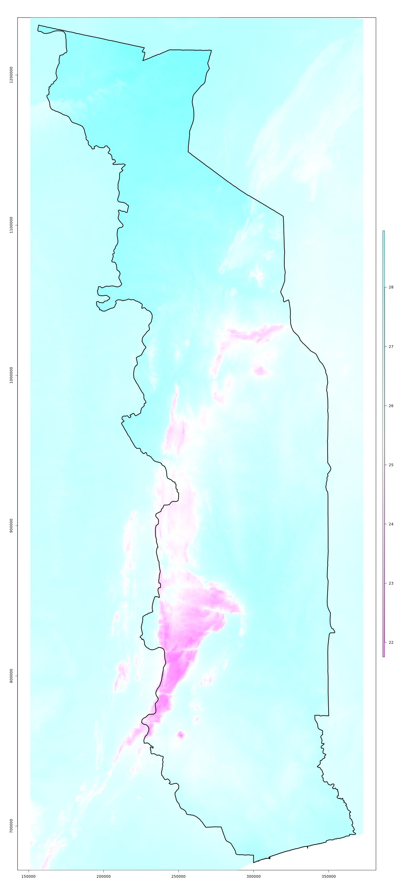
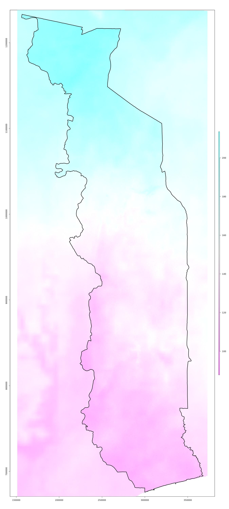
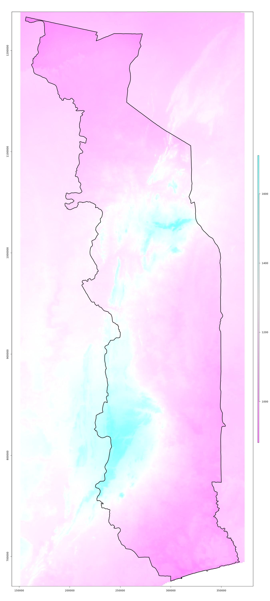
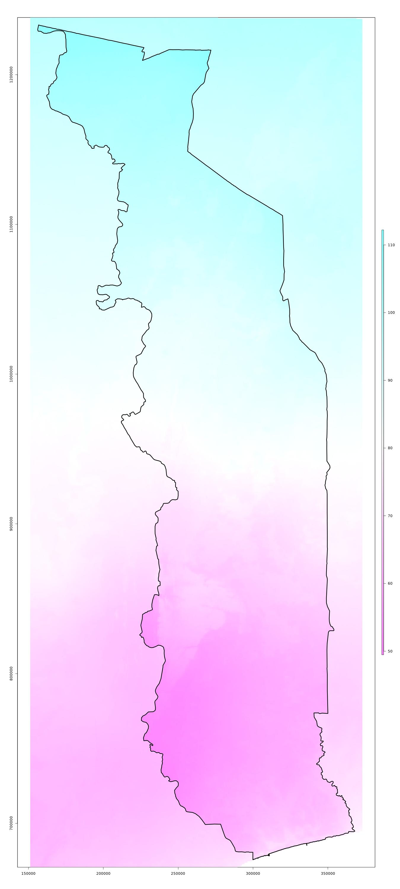

2.1.2 WorldClim
Les variables climatiques ont une grande influence sur les caractéristiques des forêts. Ils sont donc importants pour l’évaluation des surfaces forestières et de la biomasse sur la base d’images satellitaires. Les données climatiques de WorldClim version 2 ont servi comme base. La température annuelle moyenne (BIO1), la saisonnalité de la température (BIO4), la précipitation annuelle (BIO12) et la saisonnalité de la précipitation (BIO15) étant identifiées comme les variables WorldClim les plus importantes pour l’évaluation des forêts.
2.1.2.1 Acquisition des données
Des données climatiques historiques (1970 – 2020) avec une résolution de 30 arcsecondes (environ 1 km2 sur l’équateur) disponible à WorldClim version 2 ont été utilisées.
Pour l’analyse, des variables climatiques mensuelles ont été utilisées :
- prec: Précipitations pour les mois de janvier à décembre (mm)
- tmax: Température maximale pour les mois de janvier à décembre (ºC)
- tavg: Température moyenne pour les mois de janvier à décembre (ºC)
- tmin: Température minimale pour les mois de janvier à décembre (ºC)
Et également les variables bioclimatiques qui en découlent :
- BIO1: Température moyenne annuelle
- BIO2: Fourchette diurne moyenne (moyenne des températures mensuelles (max temp - min temp))
- BIO3: Isothermie (BIO2/BIO7) (×100)
- BIO4: Saisonnalité de la température (écart-type ×100)
- BIO5: Température maximale du mois le plus chaud
- BIO6: Température minimale du mois le plus froid
- BIO7: Gamme de température annuelle (BIO5-BIO6)
- BIO8: Température moyenne du trimestre le plus humide
- BIO9: Température moyenne du trimestre le plus sec
- BIO10: Température moyenne du trimestre le plus chaud
- BIO11: Température moyenne du trimestre le plus froid
- BIO12: Précipitation annuelle
- BIO13: Précipitation du mois le plus humide
- BIO14: Précipitation du mois le plus sec
- BIO15: Saisonalité de la précipitation (Coefficient de variation)
- BIO16: Précipitation du trimestre le plus humide
- BIO17: Précipitation du trimestre le plus sec
- BIO18: Précipitation du trimestre le plus chaud
- BIO19: Précipitation du trimestre le plus froid
2.1.2.2 Prétraitement des données
Les données sont lues et reprojetées sur le raster des images Landsat (UTM 31, résolution de 30 mètres) et coupées à la taille.
Example
 Données bioclimatiques WorldClim version 2: température annuelle moyenne (BIO1) / saisonalité de la température (BIO4) / précipitation annuelle (BIO12) / saisonalité de la précipitation (BIO15)
Script R: 01_SSTS/01_data/_src/prep-Worldclim.R
###############################################################################
# prep-Worldclim.R: lire et reprojeter les données de WorldClim
# -----------------------------------------------------------------------------
# Bern University of Applied Sciences
# Oliver Gardi, <oliver.gardi@bfh.ch>
# 13 Mai 2020
# Définitions des variables ===================================================
IN.DIR <- paste0(DIR.RAW.DAT, "/Worldclim")
OUT.DIR <- paste0(DIR.SST.DAT, "/Worldclim")
if(!dir.exists(OUT.DIR)) dir.create(OUT.DIR)
# Reprojection images WorldClim vers Landsat (résolution 30m, UTM 31, ...) ====
foreach(file=dir(IN.DIR, pattern=".*Togo[.]tif$")) %dopar% {
system(paste("gdalwarp",
paste0(IN.DIR, "/", file),
"-t_srs '+proj=utm +zone=31 +datum=WGS84'",
"-tr 30 30",
paste("-te", TGO.EXT@xmin, TGO.EXT@ymin, TGO.EXT@xmax, TGO.EXT@ymax),
paste0(OUT.DIR, "/", file),
"-dstnodata -3.4e+38",
"-co COMPRESS='LZW'",
"-co INTERLEAVE='BAND'",
"-overwrite"))
system(paste("gdalinfo -stats",
paste0(OUT.DIR, "/", file)))
}
# Créer des vignettes pour les donées WorldClim ===============================
foreach(file=dir(OUT.DIR, pattern=".*[.]tif$")) %dopar% {
image <- stack(paste0(OUT.DIR, "/", file))
type <- unlist(strsplit(file, "_"))[3]
if (type == "prec") { zlim <- c(0,320); col <- rev(topo.colors(255)) }
else if (type == "tmin") { zlim <- c(14.0,27.8); col <- rev(heat.colors(255)) }
else if (type == "tmax") { zlim <- c(24.9,37.5); col <- rev(heat.colors(255)) }
else if (type == "tavg") { zlim <- c(19.7,32.7); col <- rev(heat.colors(255)) }
else { zlim <- NA; col <- rev(cm.colors(255)) }
foreach(i=1:nlayers(image)) %dopar% {
jpeg(paste0(OUT.DIR, "/", sub("[.]tif$", "", file), "-", str_pad(i, 2, "left", 0), ".jpeg"),
width=1350, height=3000)
plot(image[[i]], col=col, zlim=zlim)
plot(mask(image[[i]], TGO, inverse=TRUE), col="#FFFFFF66", legend=FALSE, add=TRUE)
plot(TGO, add=TRUE, lwd=3)
dev.off()
}
}